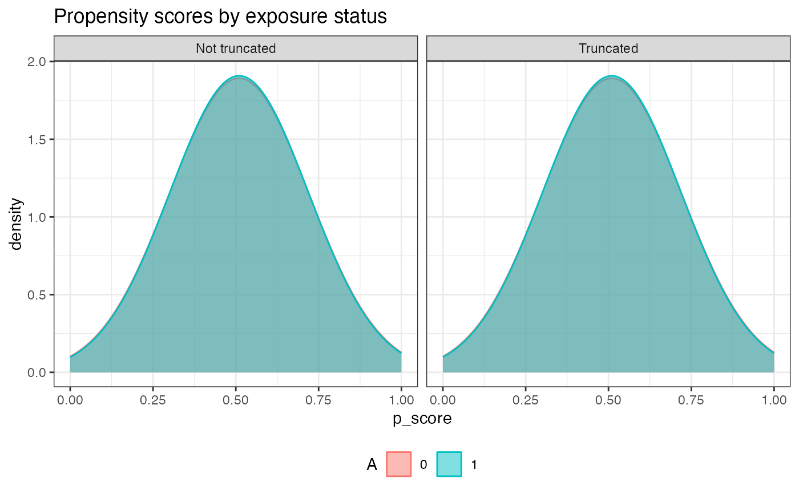

An R6Class of AIPW for estimating the average causal effects with users' inputs of exposure, outcome, covariates and related libraries for estimating the efficient influence function.
AIPW object
An AIPW object is constructed by new() with users' inputs of data and causal structures, then it fit() the data using the
libraries in Q.SL.library and g.SL.library with k_split sample splitting, and provides results via the summary() method.
After using fit() and/or summary() methods, the propensity scores by exposure status can be examined with plot.p_score().
See examples for illustration.
AIPW$new(Y = NULL, A = NULL, W = NULL, W.Q = NULL, W.g = NULL, Q.SL.library = NULL, g.SL.library = NULL, k_split = 10, verbose = TRUE, save.sl.fit = FALSE)
| Argument | Type | Details |
Y | Integer | A vector of outcome (binary (0, 1) or continuous) |
A | Integer | A vector of binary exposure (0 or 1) |
W | Data | Covariates for both exposure and outcome models. |
W.Q | Data | Covariates for the outcome model (Q). |
W.g | Data | Covariates for the exposure model (g). |
Q.SL.library | SL.library | Algorithms used for the outcome model (Q). |
g.SL.library | SL.library | Algorithms used for the exposure model (g). |
k_split | Integer | Number of folds for splitting (Default = 10). |
verbose | Logical | Whether to print the result (Default = TRUE) |
save.sl.fit | Logical | Whether to save Q.fit and g.fit (Default = False) |
W, W.Q & W.gIt can be a vector, matrix or data.frame. If and only if W == NULL, W would be replaced by W.Q and W.g.
Q.SL.library & g.SL.libraryMachine learning algorithms from SuperLearner libraries or sl3 learner object (Lrnr_base)
k_splitIt ranges from 1 to number of observation-1.
If k_split=1, no sample splitting; if k_split>1, use similar technique as cross-validation
(e.g., k_split=10, use 9/10 of the data to estimate and the remaining 1/10 leftover to predict.
NOTE: it's recommended to use sample splitting.
save.sl.fitThis option allows users to save the fitted sl object (libs$Q.fit & libs$g.fit) for debug use. Warning: Saving the SuperLearner fitted object may cause a substantive storage/memory use.
| Methods | Details | Link |
fit() | Fit the data to the AIPW object | fit.AIPW |
summary() | Summary of the average treatment effects from AIPW | summary.AIPW_base |
plot.p_score() | Plot the propensity scores by exposure status | plot.p_score |
plot.ip_weights() | Plot the inverse probability weights using truncated propensity scores | plot.ip_weights |
| Variable | Generated by | Return |
n | Constructor | Number of observations |
obs_est | fit() & summary() | Components calculating average causal effects |
estimates | summary() | A list of Risk difference, risk ratio, odds ratio |
result | summary() | A matrix contains RD, ATT, ATC, RR and OR with their SE and 95%CI |
g.plot | plot.p_score() | A density plot of propensity scores by exposure status |
ip_weights.plot | plot.ip_weights() | A box plot of inverse probability weights |
libs | fit() | SuperLearner or sl3 libraries and their fitted objects |
sl.fit | Constructor | A wrapper function for fitting SuperLearner or sl3 |
sl.predict | Constructor | A wrapper function using sl.fit to predict |
obs_estAfter using fit() and summary() methods, this list contains the propensity scores (p_score),
counterfactual predictions (mu, mu1 & mu0) and efficient influence functions (aipw_eif1 & aipw_eif0) for later average treatment effect calculations.
g.plotThis plot is generated by ggplot2::geom_density
ip_weights.plotThis plot uses truncated propensity scores stratified by exposure status (ggplot2::geom_boxplot)
#>#>#>#>library(ggplot2) #create an object aipw_sl <- AIPW$new(Y=rbinom(100,1,0.5), A=rbinom(100,1,0.5), W.Q=rbinom(100,1,0.5), W.g=rbinom(100,1,0.5), Q.SL.library="SL.mean",g.SL.library="SL.mean", k_split=1,verbose=FALSE)$fit() #fit the object aipw_sl$fit() #calculate the retults aipw_sl$summary(g.bound = 0.025) #check the propensity scores by exposure status after truncation aipw_sl$plot.p_score()